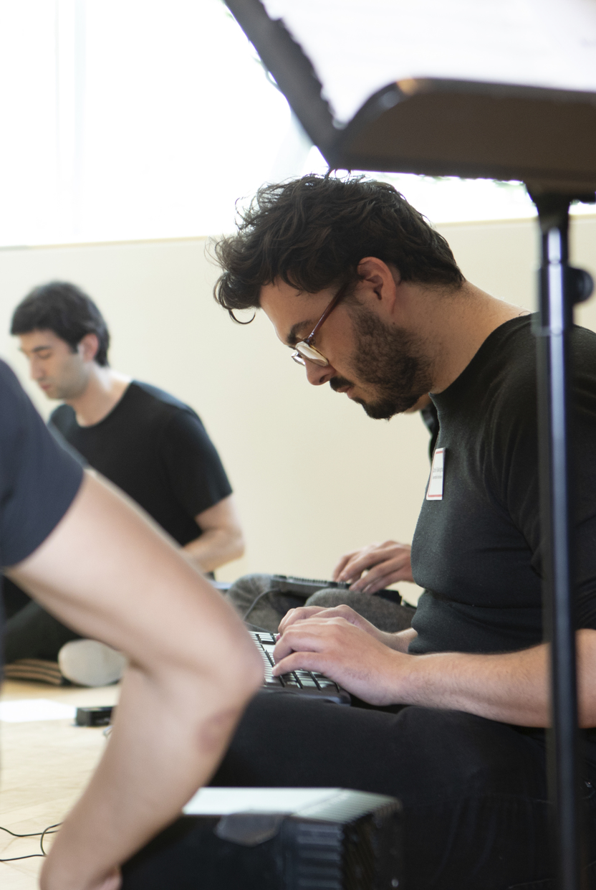

<html> 
    <head>
        <link rel="stylesheet" type="text/css" href="index.css">
        <link href="https://fonts.googleapis.com/css2?family=Jost:wght@300&display=swap" rel="stylesheet">
    </head>
</html>

<body> 
    <div class="heading">
        <h1>CURTIS FALKINGHAM</h1>
        <h2>SOUND AND MUSIC DESIGNER</h2>
    </div>
    <div class="menu">
        <h3 class="current"><a href="about.html">ABOUT</a></h3>
        <h3><a  href="index.html">FEATURED PROJECTS</a></h3>
        <h3><a href="contact.html">CONTACT</a></h3>
    </div>
    <hr>
        <article class="bio"> 
            <div class="left">
            <div class="image-caption">
                
                <figcaption>*Curtis playing with Ensemble Non-Linear for audience Herbie Hancock at Rensselaer Polytechnic Institute<br><br> <br> <br> </figcaption>
            </div>
            </div>

            <h1>About Me</h1>
            <p> Curtis Rae Falkingham is an intermedia-sound artist who is practicing and researching work in experimental music technology, sound design, and experimental music performance.
                <br><br>
                Based in England, they optained their bachelors degree of Music Technology at the University of Sussex. During this time they also participated in a voluntary year abroad at Rensselaer Polytechnic Institute in Troy, New York. During the past 6 years, they have been constantly producing new projects most of which are seen in this portfolio. Alongside conducting practical projects they have also been researching new methods of instrument design and musical performance.
            </p>
        </article>
     <hr>
</body>
</html>
